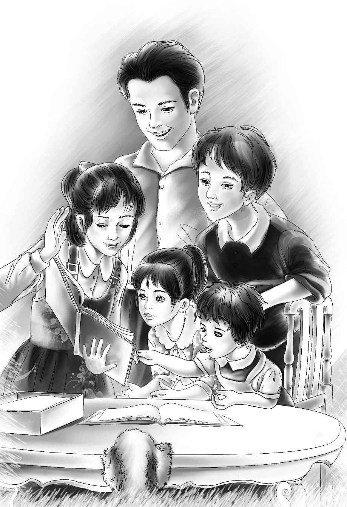

The Museum
大乔和孩子们围坐在桌子旁，亨利打开包装袋，12本看起来非常有趣的图书展现在大家面前。
“《蝴蝶图集》。”杰西念着书名。
“《贝类图集》。”维莉读道。
“《花草图集》，”亨利说，“噢，这三本书肯定是一个系列。快看，好精美的图片。”
这个帮工似乎和孩子们有着同样浓厚的兴趣，他很快便找出了桌上放着的紫色小花的图片，书上写着它的名字：海边香豌豆。接着，大乔又一一道出孩子们拾来的贝壳的名字。他看到亨利正注视着自己。“这些你是从哪儿学到的？”亨利问道。
“噢，我只是碰巧知道罢了。”大乔说，“我以前在海边住过。”
大乔意识到自己得更谨慎一些了，因为对于一个帮工来说，自己懂的似乎太多了一点。因此，他借口说还要回去干活儿，便匆匆离开了。
大乔走后，亨利提议道：“咱们上楼去看看吧！”他朝楼上跑去，其他人和小狗则紧随其后。
亨利将大窗户打开，四处打量着楼上的房间，只见屋子的一头堆着稻草，角落里放着一把老旧的直背椅子。杰西走过去摇了摇。

“好棒！”杰西说，“等爷爷来看咱们时它就可以派上用场了。真想不到，咱们居然有了一把给客人坐的椅子！”
“要是有木板就更好了，”亨利说，“我原本还以为在楼上能找到一些呢。”
“这是什么？”班尼问道。
“是木板！”亨利喜出望外地叫了起来。
只见稻草下面正堆着一些八英尺长的木板。
“呀，真好，”亨利惊喜地说，“我们可真幸运！我这就开始行动，把木板扛到树下面去，锯开了做几张桌子。”
“我要把花儿都晾干，”杰西说，“维莉负责把它们的名称都查出来，班尼可以帮忙往楼下搬木板。”
“要风干这些花，咱们得有许多报纸才行，”维莉一边下楼，一边说，“可我们连一张都没有。”
“大乔有，”班尼的话让大家非常意外，“他每天都要订两份，肯定已经攒下了不少。”
“你去问问他好吗，班尼？”维莉说，“跟他要那些旧报纸就可以了，还有，别忘了谢谢人家。”
班尼来到丹尼尔船长的小屋，敲了敲门。
“在这儿呢！”一个声音喊道。班尼绕到了小屋的另一侧，看到大乔和船长正坐在那儿洗鱼。
“你有旧报纸吗？”班尼问，“我们要用它们来夹干花，不是用来看的。”
“当然有啊！”大乔笑呵呵地朝几堆旧报纸指了指。
“噢，一摞就够啦，”班尼开心地叫道，“杰西说只想要一打，她肯定没料到会有这么多。谢谢你，大乔。”
杰西确实非常意外，不过她也高兴极了。
“你那儿有一尺左右长的薄木板吗？”她朝着亨利喊道。
“这块怎么样？”亨利问道。
“太好啦。去拿过来，班尼。”杰西说。
不过，班尼没动，倒是望望屁颠颠地过来了。小狗一听到“去拿过来”这话，赶紧跑出马厩，奔向了亨利。亨利将木板小心翼翼地放到了它嘴里，望望立刻跑了回来，将木板放到杰西脚下。杰西乐不可支，她放下手中的活儿，赏了它一片面包。
两个姑娘像在学校里做手工那样，将鲜花铺到报纸上展开。随后，她们又在花上面压了不少报纸，盖上木板，最后搬了一块石头，放在木板上面。
“我听到摩托艇的声音了。”亨利说。
“我下去看看吧，”班尼说，“说不定有给咱们的东西呢！”
杰西说：“可别这么肯定噢。”不过，让她意外的是，几分钟后班尼果然抱着一个大大的箱子回来了。
“真的有咱们的东西！”他叫道，“丹尼尔船长说是爷爷送来的。”
亨利打开了那个大箱子。
“是毛衣！”他叫道。
班尼很快找到了自己的那件。“红色毛衣肯定是我的，”他说，“我猜紫色的是维莉的。”
还有一件漂亮的蓝色毛衣，是给杰西的，亨利的则是棕色的。他们迫不及待地换上新衣服，想看看自己的新模样。
“爷爷多半是预感到天气要转凉了。”杰西说。
“我也是这么想的，”亨利回答道，“我们很快就会知道这些礼物到得有多及时了！”
晚上，当杰西半夜醒来时，果真听到了雨落到马厩屋顶上的声音。她穿上鞋，将所有的窗子都关了起来。亨利也起身帮她关上了马厩的门。“我想现在应该淋不到咱们了。”他小声说。
“什么地方漏雨了？”杰西轻轻地问。两人仔细听了听，果然听到炉子旁边有滴水的声音。
“千万不能让炉子淋湿了，”亨利禁不住大声喊道，“快拿大水壶来！”
亨利将壶放到了漏雨的地方，落进壶里的雨水似乎越来越多了。
“我们没法睡了，壶里的水随时可能会溢出来。”过了一会儿亨利说。
“怎么啦，杰西？”班尼睡眼惺忪地叫道。
“屋顶漏雨了，”亨利说，“你接着睡吧！”
“我睡不着，”班尼叫道，“我这边的窗子也进水了，都快要把我给淹了。”
“噢，天哪！”杰西喊道，“手电筒在哪儿？”
借着手电筒的光，两个大孩子看到班尼床边的墙壁已经湿了，雨水正顺着窗户流了进来。
“快起来，班尼！”亨利喊着。
班尼磨磨蹭蹭地出来了。“我一点儿也不喜欢这床了。”说着他便哭了起来，“我喜欢爷爷家里的床，我想要回家！那儿又舒服又干爽。”
“好啦，班尼，别这样！”杰西说，“你是一个大男孩了，应该帮我们才对。要是我们把你一个人留在家里，你肯定也不高兴，你说对不对？”
“嗯。”班尼已经完全清醒了，开始帮忙将他的床挪了出来。
“怎么了？”维莉问道。
“马厩漏雨了！”班尼说，“估计你那边也漏了。”
“没，没有，”维莉说，“但我能听到什么地方有漏雨的声音。”
“到处都在漏雨。”亨利担忧地说。
“要有几个水桶就好了，”杰西说，“窗户下面放一个，墙角放一个。”
“我们不能睡觉，”维莉说，“桶和壶里的水迟早都会溢出来的。”
“你们大家先睡吧，”亨利说，“我守着，负责倒水。班尼，你去我床上睡。我想，漏雨的地方应该都已经被咱们找出来了。”
班尼很高兴地躺到了亨利的被窝里，很快便睡着了。亨利守了差不多一个小时，他又倒了一次桶里的水，才蜷缩着身子躺到了班尼旁边，而此刻雨差不多停了。
“我明天得把屋顶修一下，”他暗想，“说不定大乔可以帮我，他是一个非常能干的人。”
第二天早上，雨依然下个不停。孩子们穿好衣服，吃了早餐，看着外面的雨发起了愁。
“咱们还是得有人出去取日常用品才行！”亨利说，“本来应该是我去的，可我担心衣服淋湿，就干不了其他事情了。”
“那你其他的衣服呢？”班尼问。
亨利无奈地指了指炉子上方晒的一排衣服。
“还没干呢，”杰西说，“我现在真后悔把它们给洗了。”
“亨利可以躺在床上等衣服晾干嘛！”班尼说。
“嘿，班尼！”亨利喊道，“你怎么就那么喜欢床？你赶紧帮我想想，看我到底还有什么可以穿的。”
“杰西可以用床单给你做一件衣服出来。”班尼脱口而出。
“还真可以！”杰西说，“多亏咱们带了维莉的针线包出来。我可以用床单给你做一条裤子，在上衣晾干之前，你就先穿新毛衣吧！”
“你真是太好了，杰西，”亨利说，“那现在赶紧想想，需要我带些什么东西回来，这样我只用跑一趟就可以解决问题。”
“我还有个办法，”班尼说，“你干吗不穿你的泳衣出去？这样你的衣服就不会被淋湿了。”
亨利乐了：“这主意好，班尼。要是没有你，我们可怎么办呀？”
“班尼，你真棒！”杰西也赞道。
班尼笑了起来：“我知道，要是实在没办法，你也可以用床单做一条裤子出来的。”
“我去换泳衣，”亨利说，“你们先想好需要一些什么东西。”
杰西说：“我昨天已经预订了些土豆，箱子里应该会有的。另外还需要好多面包和牛奶，你能拿得了吗？还有，我想做蛤蜊杂烩汤，你得去菜园里摘一些洋葱回来。那些洋葱不算太大，但也不小了。”
“我先去摘洋葱，”亨利穿着泳衣出现在大家面前，“待会儿从门外给你们递进来。我想其他的东西一次性拿回来应该没问题。”
亨利把门打开了一条缝，将小洋葱从门缝里递了进来。等到他提着杂物篮子回来时，就像是刚游了泳一样，全身都湿透了。
用毛巾擦干身上的雨水后，亨利换上了干衣服，准备开始干活儿了。
“今天正好可以布置我们的小博物馆。”他说，“我来做些木头盒子放贝壳和蝴蝶。”
很快，桌子上便摆满了木头、纸张、画笔和各种工具。
忙活到11点半，杰西暂时放下了手里的活计，准备开始做蛤蜊杂烩汤了。
“我要用小洋葱来做杂烩汤喽！”她说。
杰西化了些黄油，将洋葱煸炒了一会儿，再放入水、盐和土豆片。等到土豆片煮熟之后，她又加进切开的蛤蜊，最后搁了点牛奶便起锅了。
午餐准备好了。四兄妹坐了下来，喝着热腾腾的杂烩汤，完全忘记了外面的风吹雨打。
“杰西，你真是无所不能！”亨利赞不绝口。
“好吃，好吃！杰西做的杂烩汤真好吃！”班尼说。
午饭后，孩子们画了鸟儿，并且将海藻固定了起来。亨利来到楼上，将做好的桌子摆放好。
天黑时，奥登博物馆便正式开张了。
“我觉得这些鸟儿是博物馆里最好看的东西啦！”班尼说。不过，此时的班尼，还不知道第二天会有更大的惊喜等着他。